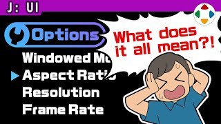
速览
菜单项当然是文字，多数情况是单词，有时只看单词完全不知道那个功能是什么。这时有用的就是功能说明，樱井称为帮助（Help）：在画面下方等处放一段说明文字。应该积极加入——他的作品除了做不到的年代，几乎都有，是他相当重视的功能。设定帮助文字时，他特别注意一件事：绝对不用和菜单相同的词来说明（重要所以说两遍）。像玩笑但实际很多：「选项」的说明写成「前往选项」——这是给不懂「选项」意思的人看的帮助，这样毫无意义。请尽量换个说法，比如「进行游戏中的各种设置」。理想是让人一看就懂，但只靠帮助有时也难，所以作者想好一次后要再嚼碎：客观看待意思、省略冗余、反复推敲直到能更简单地传达——要点是意译而不是直译。模式命名也一样，比起「单人模式」，「一个人玩」更好懂。当然也要避免专业术语，「Config」「Key Repeat」不懂的人就是不懂。
1. 什么是帮助文字 0:04
菜单项当然是文字，多数情况下是单词。只看单词，有时完全不明白那个功能是做什么的。
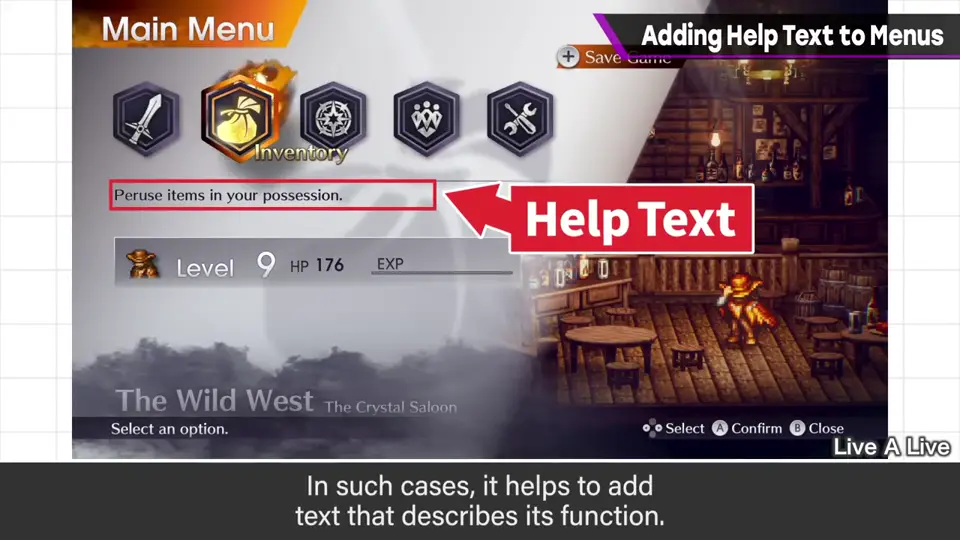
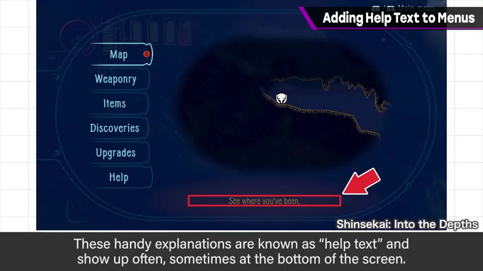
这时有用的就是功能说明——樱井称之为「帮助」：在画面下方等处放说明文字。
2. 应积极加入 0:25
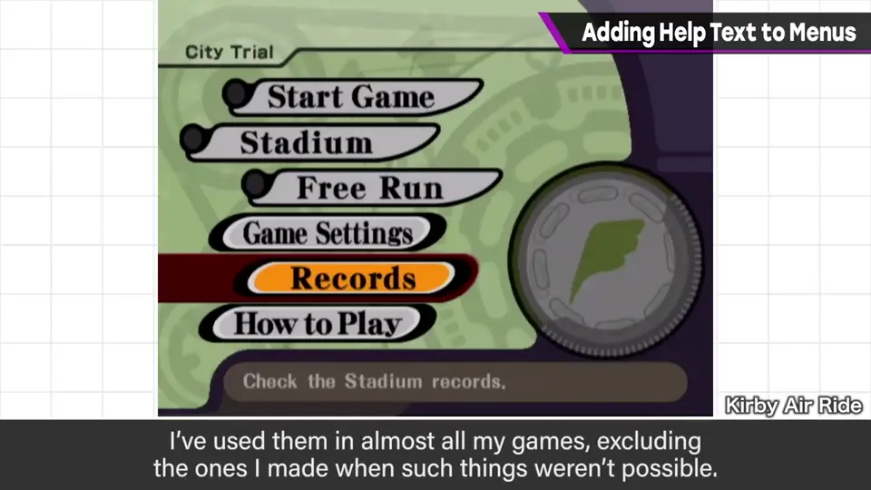
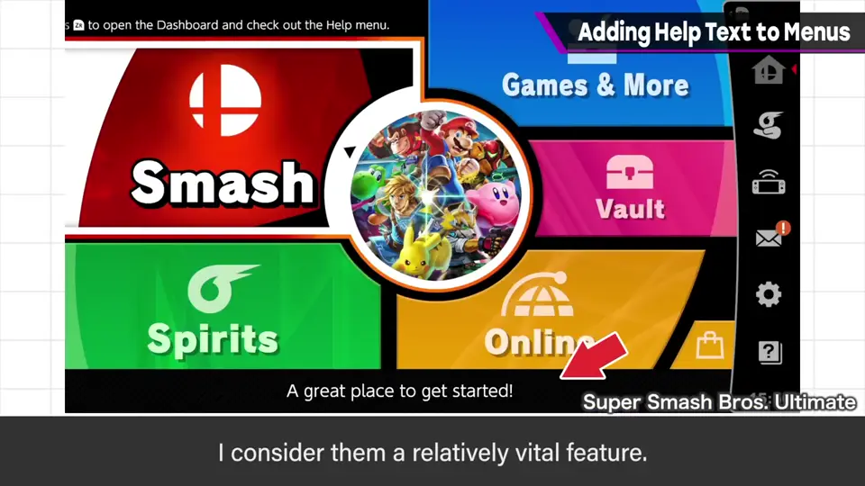
3. 规则：别用同样的词 0:45
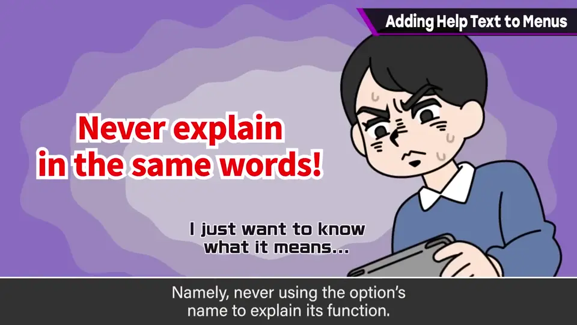
听起来像玩笑，但实际上非常多：「选项」的说明写着「前往选项」。这是给不懂「选项」意思的人看的帮助，这样就没意义了。
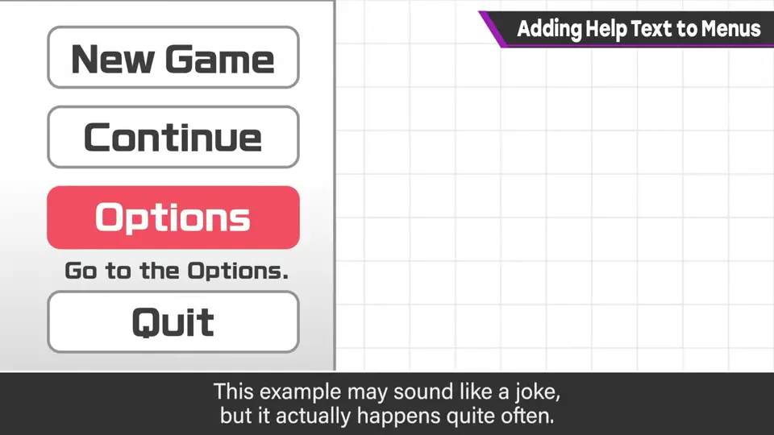
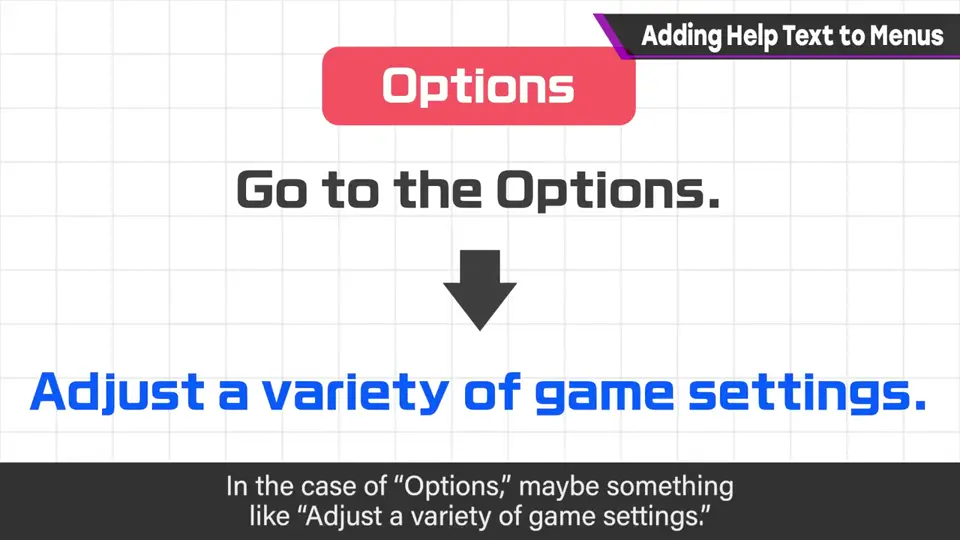
4. 再嚼碎一次 1:38
理想是让意思一下子进入脑中，但只靠帮助有时很难。所以作者想好一次后，要再嚼碎：客观看待意思、省掉多余的说明，持续推敲直到能更简单地传达。
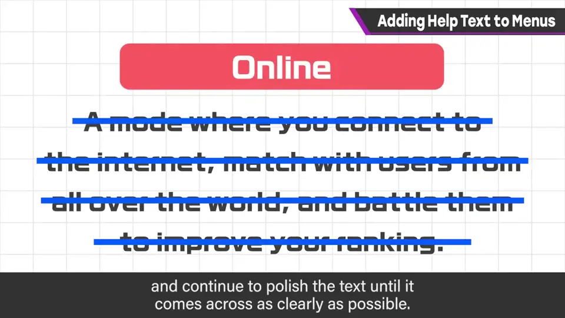
5. 命名与术语 2:02
模式名本身的取法也一样：与其叫「单人模式（1P Mode）」，「一个人玩（Solo）」也许更好懂。
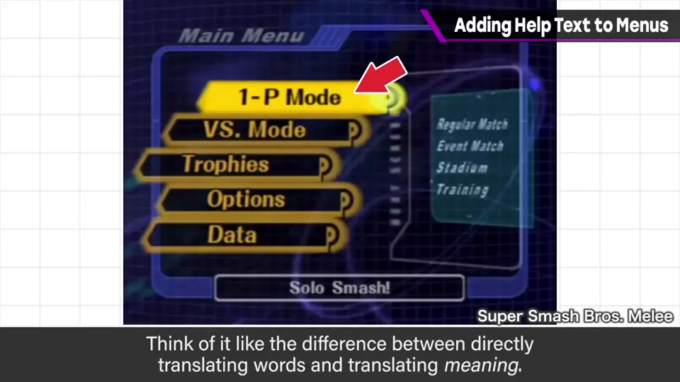
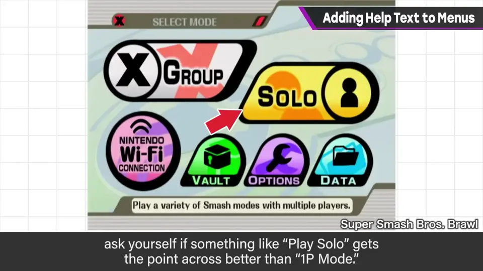
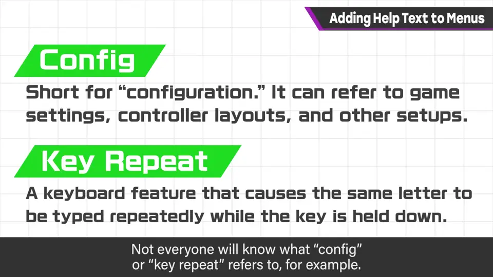
当然也要避免专业术语，「Config」「Key Repeat」不懂的人就是不懂。
自测题
1. 写帮助文字时樱井最在意的规则是什么？
绝不用和菜单项相同的词来说明。 0:56
2. 为什么「选项：前往选项」是糟糕的帮助？
帮助是给不懂这个词的人看的，用同样的词等于没说明。 1:10
3. 想好帮助文字后还应做什么？
再嚼碎：客观看意思、去冗余、意译不直译，并避免专业术语。 1:45